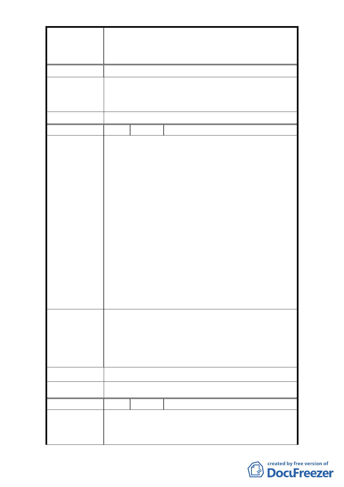

修訂臺北市大安區青田街保存區聚落風貌保存專用區細部計
案
名
畫、變更部分第三種住宅區、第三種商業區(特)為第三種住宅區
(特)(日式宿舍)及第三種商業區(特)(日式宿舍)暨劃定週邊地
區都市設計管制細部計畫案
建 議 辦 法 應重新檢討及改正。
青田街細部計畫範圍內之古蹟、歷史建築及日式宿舍依
市 府 回 覆 意 見 文資法第 18 條規定，應由所有人、使用人或管理人管
理維護。本府文化局亦將盡主管機關督導之責。
委 員 會 決 議 依市府回覆意見辦理。
編 號 12 陳情人 和樂工程顧問有限公司
1. 本公司受「臺北市大安區青田街 7 巷 9 號建築物暨
土地」(以下簡稱申請基地)所有權人之繼承人廖凱
修先生(以下簡稱申請人)委託，辦理廢止日式宿舍
管制程序。
2. 申請基地經市府民國 96 年 8 月 9 日府都規字第
09633645200 號函公告「擬定臺北市大安區青田街保
存區聚落風貌保存專用區細部計畫、變更部分第三
陳 情 理 由 種住宅區、第三種商業區(特)為第三種住宅區
(特)(日式宿舍)及第三種商業區(特)(日式宿舍)暨
劃定週邊地區都市設計管制計畫案」為日式宿舍管
制範圍。
3. 申請人因得知 市府文化局於民國 100 年 7 月 8 日舉
辦「青田街都市計畫變更草案說明會」進行細部計
畫修訂程序，故希望一併辦理廢止申請基地之土地
管制。
申請人陳情申請基地建築物本體非屬傳統日式宿舍形
式，不具保存價值；且全計畫區範圍內除清真寺外，只
建 議 辦 法 有本案屬私人財產，因計畫管制而損申請人權益；據此
依「歷史建築登錄廢止審查及輔助辦法」第七條提出申
請辦理程序。
市 府 回 覆 意 見 同編號 7 回覆意見。
委 員 會 決 議 同編號 7 決議。
編 號 13 陳情人 楊攸碩、鄭馨芝、鄭祖舜、汪敏月
1. 開挖率應維持原計劃 60%為上限，以確實有效保護原
陳 情 理 由 有老樹於重新開發後仍能繼續生存。
2. 土地使用計劃及分區管制（三）不得做為容積接受
- 15 -